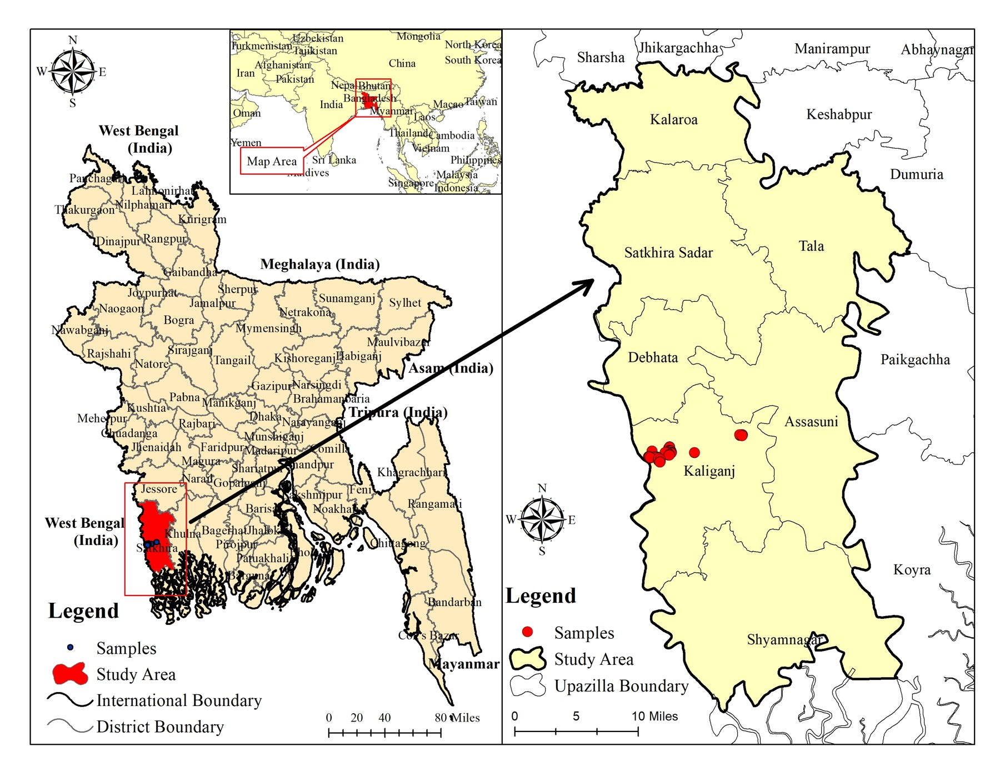
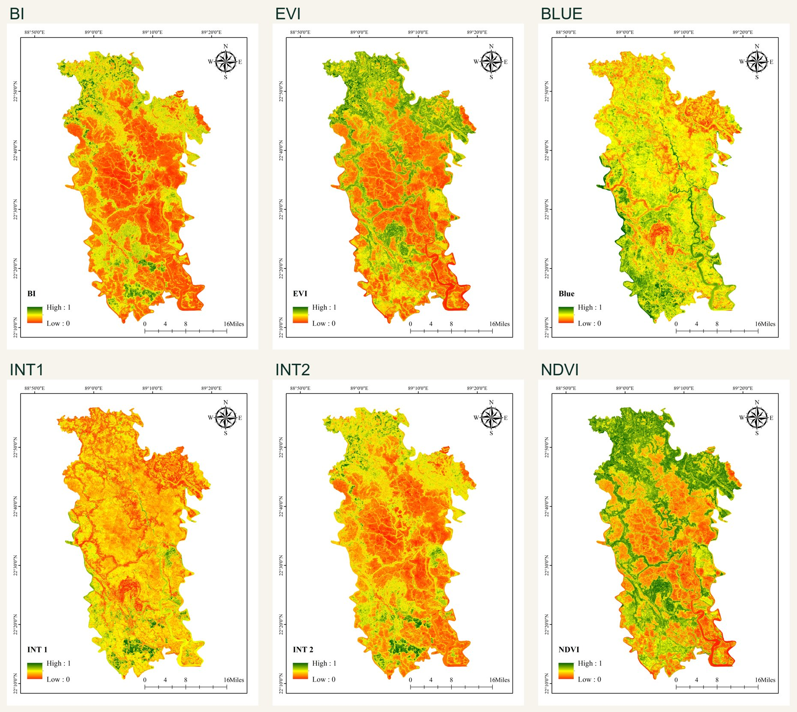
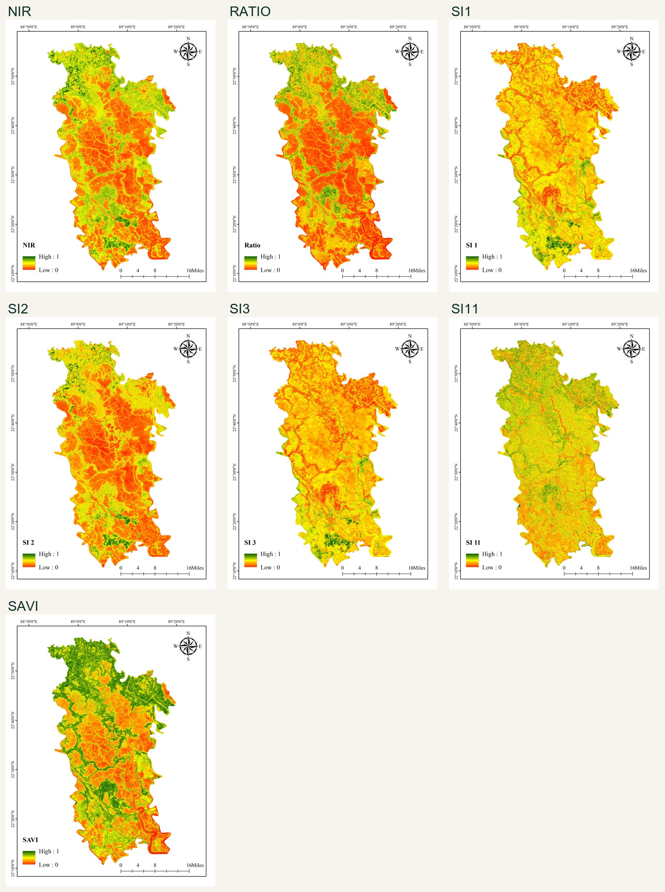
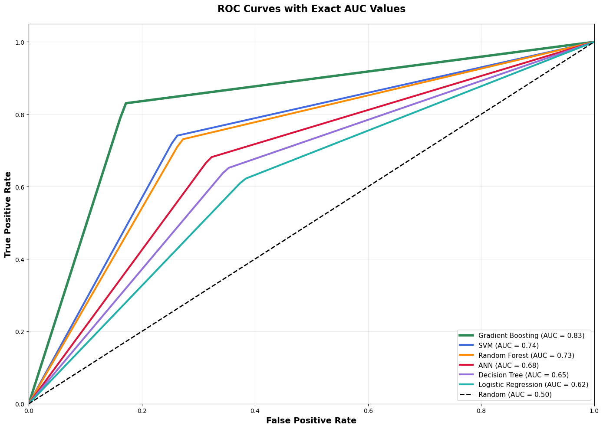
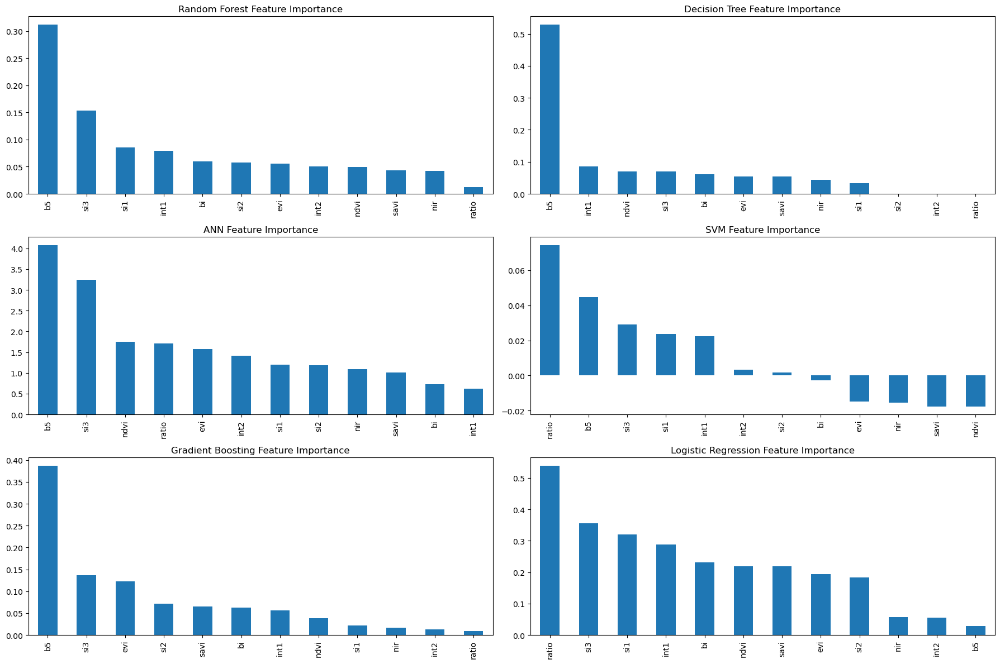
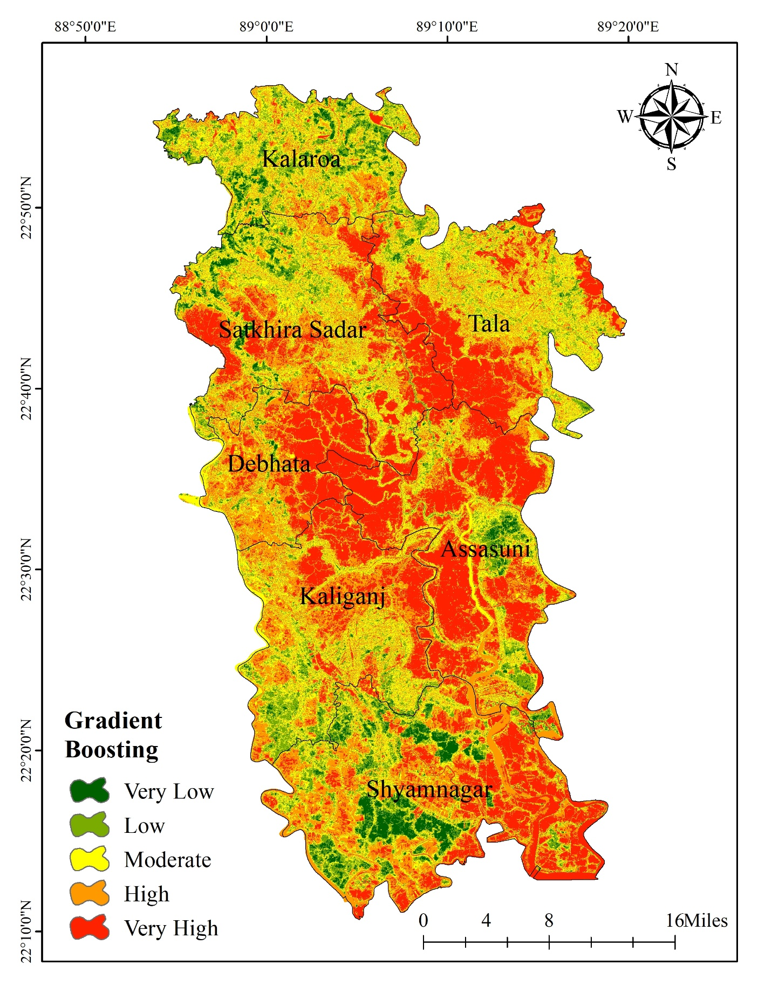

A livelihood-scale environmental threat
Soil salinity degrades agricultural productivity, freshwater availability, vegetation health and long-term livelihood security across Bangladesh’s southwestern coastal zone.
Sentinel-2 MSI · Spectral Index Engineering · Six-Model Comparison · Coastal Bangladesh
A 10-metre-resolution susceptibility framework combining thirteen Sentinel-2 spectral indicators, 241 field-derived salinity samples and six machine-learning models to reveal the south-to-north salinity gradient across Satkhira District.
01 · The Coastal Salinity Problem
Soil salinity degrades agricultural productivity, freshwater availability, vegetation health and long-term livelihood security across Bangladesh’s southwestern coastal zone.
Cyclones, tidal inundation, saline groundwater, embankment failure, shrimp aquaculture and poor drainage combine to intensify salt accumulation in low-lying coastal land.
Sentinel-2 captures the spectral brightness of salt-affected soil, moisture variation and vegetation stress. Machine learning converts those signals into spatial susceptibility classes.
“The maps reveal a distinct coastal-to-inland transition: salinity intensifies through the central and southern belt, while northern Kalaroa remains comparatively protected.”
02 · Project Scope
The project spans Sentinel-2 acquisition and preprocessing, spectral-index engineering, salinity sample preparation, six-model implementation, ROC–AUC validation, susceptibility classification, upazila-level interpretation, cartographic visualisation and manuscript development.
03 · Study Area & Ground Data

satkhira-study-area.jpg · image unavailable
indices-bi-evi-b2-int1-int2-ndvi.jpg · image unavailable
indices-nir-ratio-si1-si2-si3-si11-savi.jpg · image unavailable04 · Analytical Framework
Sentinel-2 imagery from 1 January to 31 December 2024 was assembled at 10-metre spatial resolution for the Satkhira study boundary.
Geometric, atmospheric and radiometric corrections were applied to reduce positional error, atmospheric interference and inconsistent digital-number values.
Salinity, brightness, intensity and vegetation-response indices were derived from visible, NIR and SWIR spectral behaviour.
A total of 241 salinity observations were prepared and divided into 80% training and 20% testing datasets.
ANN, Decision Tree, Gradient Boosting, Logistic Regression, Random Forest and Support Vector Machine were trained to distinguish saline from non-saline conditions.
Models were compared through ROC–AUC. The selected model generated very low, low, moderate, high and very high susceptibility classes.
05 · Model Performance
| Model | ROC–AUC | Very High Area | High Area | Assessment |
|---|---|---|---|---|
| ANN | 0.68 | 30.68% | 21.31% | Moderate discrimination |
| Decision Tree | 0.65 | 30.44% | 37.15% | Polarised and fragmented |
| Gradient Boosting | 0.83 | 30.58% | 28.67% | ✦ Best-performing model |
| Logistic Regression · LRM | 0.62 | 28.03% | 30.18% | Limited discrimination |
| Random Forest | 0.50 | 30.93% | 21.73% | Near-random in Results text* |
| SVM | 0.74 | 28.63% | 24.28% | Second-best ROC–AUC |
GBM produced compact, spatially coherent high-susceptibility clusters through the central and southern district while achieving the strongest discrimination between saline and non-saline samples.

06 · Spectral Feature Importance
Across the six algorithms, salinity-specific indices, Blue-band reflectance and brightness-related indicators carry most of the predictive signal. Vegetation indices remain valuable, but primarily as secondary evidence of biological stress.

feature-importance-indices.png · image unavailableSI₁ repeatedly ranks among the strongest predictors, reflecting its sensitivity to the spectral contrast of salt-affected exposed surfaces.
Blue-band brightness and NIR–SWIR interactions help distinguish salt crusts, moisture variability and transitional salinity zones.
Vegetation indices contribute less direct predictive weight but clearly separate healthier northern vegetation from stressed central and southern land.
07 · The Coastal Susceptibility Gradient

upazila-wise-gbm-map.jpg · image unavailableThe strongest susceptibility clusters occur through Assasuni, Shyamnagar, Debhata and parts of Tala. Coastal exposure, tidal connectivity, saline groundwater, aquaculture and drainage conditions allow salt stress to extend inland through connected low-lying landscapes.
Kalaroa remains the district’s comparatively stable northern zone, protected by its inland position, reduced tidal connectivity and better freshwater conditions.
| Upazila | Very Low (%) | Low (%) | Moderate (%) | High (%) | Very High (%) | Combined High + Very High |
|---|
08 · Principal Findings
Gradient Boosting records ROC–AUC = 0.83, substantially ahead of SVM at 0.74 and the remaining models in the ROC results.
GBM assigns 28.67% of the mapped area to high susceptibility and 30.58% to very high susceptibility.
Approximately 49.69% of Assasuni is classified as very highly susceptible, the largest upazila-level proportion in the table.
Debhata records 41.16% very high and 36.18% high susceptibility, indicating strong pressure along its southern interfaces.
Only 5.49% of Kalaroa is classified as very high susceptibility, while low and moderate classes dominate its northern landscape.
Salinity and brightness indices rise toward the central and southern district while NDVI, EVI and SAVI decline, revealing parallel physical and vegetation-stress gradients.
09 · Limitations & Next Research Steps
10 · Planning Applications
High-risk areas can be prioritised for salt-tolerant crops, adjusted planting calendars and reduced dependence on freshwater-intensive production.
Susceptibility classes can guide irrigation allocation, groundwater monitoring, canal rehabilitation and freshwater retention investment.
Assasuni, Debhata, Shyamnagar and Tala can be assessed for hydrological connectivity, embankment weakness and drainage interventions.
Spatial susceptibility helps identify where soil amendments, flushing, drainage improvement or land-restoration pilots are most defensible.
The maps support analysis of where saline aquaculture expansion may conflict with crop production and freshwater-dependent livelihoods.
Sentinel-2 offers a scalable foundation for periodic salinity surveillance when paired with improved contemporary ground measurements.
11 · Working Paper Record
The findings shown here come from an active working-paper draft. They should not be interpreted as peer-reviewed, accepted or published results. Numerical and editorial revisions may occur before submission.
Discuss the research →Assessing Soil Salinity Susceptibility in Coastal Bangladesh Using Sentinel-2 Indices and Advanced Machine Learning Models
12 · Tools & Technical Stack